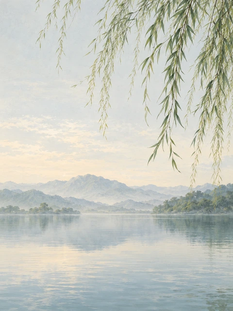
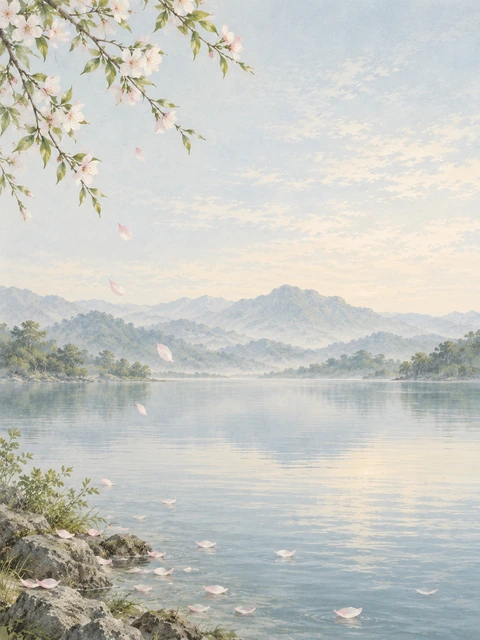
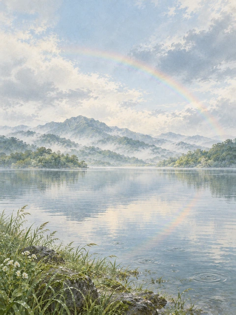
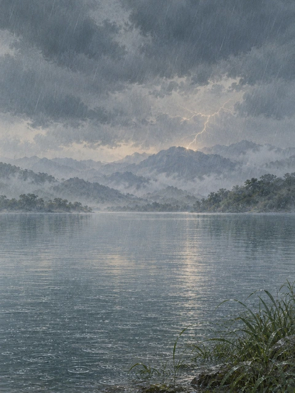
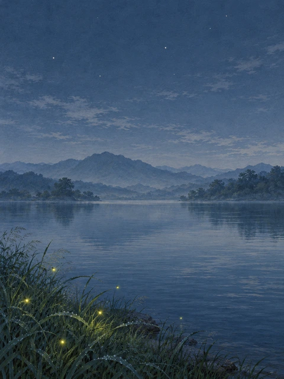
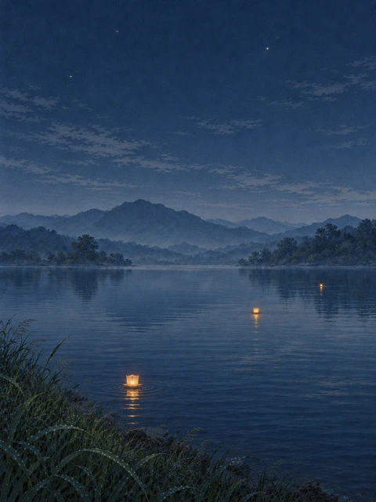
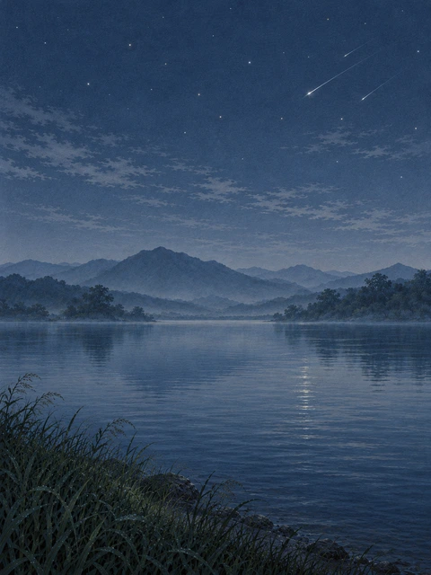
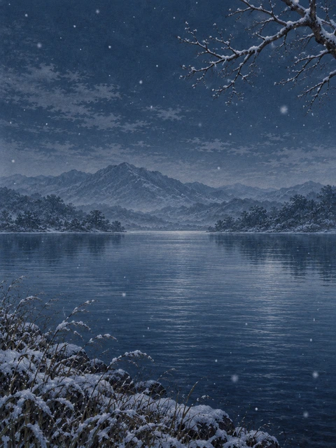

四时
同一片湖，许多可以停留的光阴。册页插画提案，供场景取意。

春 · 柳晴光入柳，风过水明

春 · 落花落花轻点一湖春

春 · 虹雨后初晴，一虹过山
夏 · 荷接天莲叶无穷碧

夏 · 雷雨远山雷雨，近水听声
夏 · 惊鹊明月别枝惊鹊
夏 · 鸣蝉清风半夜鸣蝉

夏 · 萤火夏夜流萤，草间微光
夏 · 星河满船清梦压星河
秋 · 秋秋风过岸，落叶归水
秋 · 月月色入水，清辉满湖

秋 · 河灯一盏河灯，照见晚水

冬 · 流星流星过夜，水接微光

冬 · 雪月下飘雪，山水无声